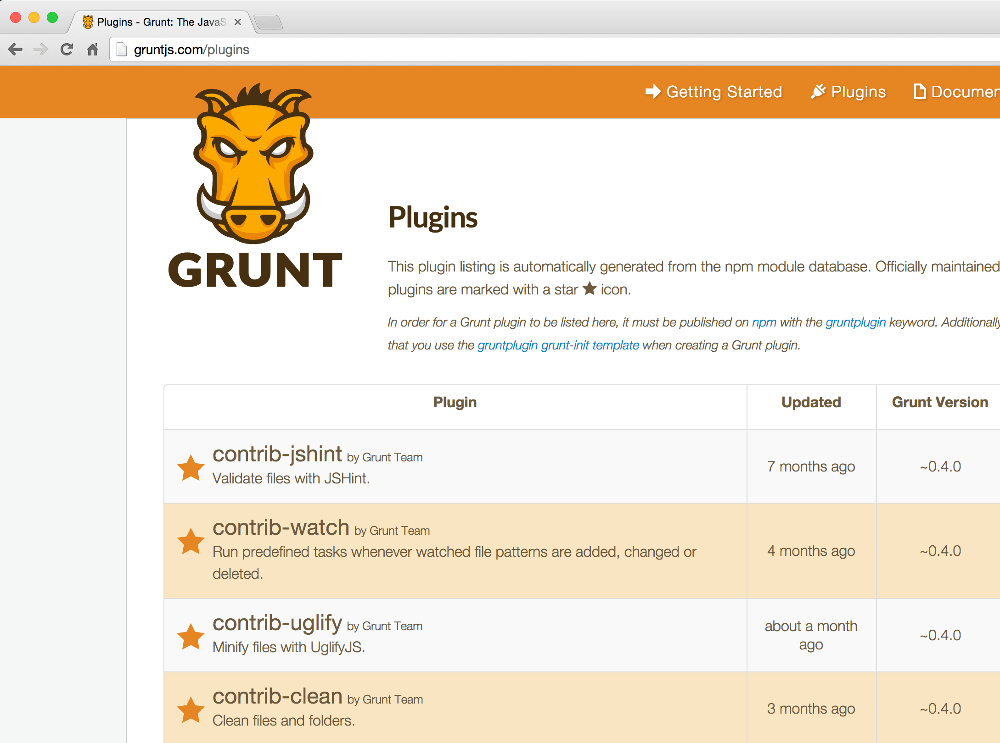

Any application that can
be written in Javascript,
will eventually
be written in Javascript
$ npm install
bower.json
# Create bower.json file and install a package
$ bower init
$ bower install reveal.js --save
{
"name": "slides-grunt-bower",
"version": "0.0.1",
"dependencies": {
"reveal.js": "~2.6.2"
}
}
# Install all dependencies on bower.json
$ bower install
.bowerrc
Configure Bower
{
"directory": "components/"
}
Install packages
Git, HTTP(s), zip, npm
$ bower install [package] --save
$ bower install [package]#[version] --save
The JavaScript Task Runner
$ npm install -g grunt-cli
package.json
{
"name": "slides-grunt-bower",
"version": "0.0.1",
"devDependencies": {
"grunt": "~0.4.5",
"grunt-contrib-concat": "^0.5.0",
"grunt-contrib-less": "^0.12.0",
}
}
# Create a basic package.json file
$ npm init
# Install Grunt
$ npm install grunt --save-dev
Gruntfile.js
module.exports = function(grunt) {
grunt.initConfig({
pkg: grunt.file.readJSON('package.json'),
less: { /* Task config */ }
});
grunt.loadNpmTasks('grunt-contrib-less');
grunt.registerTask('default',['less',...]);
};
# Run Grunt tasks
$ grunt
$ grunt less
Huge ecosystem
Grunt Devtools
github.com/vladikoff/grunt-devtools / Chrome extension
$ npm install grunt-devtools --save-dev
grunt.loadNpmTasks('grunt-devtools');
$ grunt devtools
Open Chrome Developer tools. Find the Grunt tab
Compile files to CSS
github.com/gruntjs/grunt-contrib-less / grunt-contrib-sass
$ npm install grunt-contrib-less --save-dev
less: {
compileCustom: {
options: {
cleancss: true
},
src: 'src/less/custom.less',
dest: 'src/css/custom.min.css'
}
}
CSS Sprites
Generate sprites with Glue
bitbucket.org/carkraus/grunt-glue
# Requires Glue for Python
$ npm install grunt-glue --save-dev
glue: {
icons: {
src: 'assets/icons/',
options: '--less=src/less/sprites --img=src/images/sprites --url=../images/sprites/ --namespace=icon --margin=1 --project --retina --cachebuster-filename-only-sprites'
}
}
Watch
Run tasks whenever watched files change
github.com/gruntjs/grunt-contrib-watch / Livereload
$ npm install grunt-contrib-watch --save-dev
watch: {
options: {
livereload: true,
},
less: {
files: 'src/less/**/*.less',
tasks: ['less', 'concat']
}
}
Concat
Concatenate files
github.com/gruntjs/grunt-contrib-concat
$ npm install grunt-contrib-concat --save-dev
concat: {
slides: {
src: [
'components/reveal.js/.../head.min.js',
'components/reveal.js/.../reveal.min.js'
],
dest: 'src/js/slides.min.js'
}
}
Uglify
Minify Javascript files
github.com/gruntjs/grunt-contrib-uglify
$ npm install grunt-contrib-uglify --save-dev
uglify: {
markdown: {
src: 'components/.../markdown.js',
dest: 'src/js/markdown.min.js'
}
}
CSS Min
Compress CSS files with clean-css
github.com/gruntjs/grunt-contrib-cssmin
$ npm install grunt-contrib-cssmin --save-dev
cssmin: {
extraCss: {
src: 'components/.../print/pdf.css',
dest: 'src/css/print.min.css'
}
}
Optimise Images
Minify PNG and JPEG images
github.com/gruntjs/grunt-contrib-imagemin
$ npm install grunt-contrib-imagemin --save-dev
imagemin: {
png: {
options: {optimizationLevel: 7},
files: [{
expand: true,
cwd: 'assets/images/',
src: ['**/*.png'],
dest: 'src/images/min/',
ext: '.png'
}]
I'm a javascript engineer!

I can write my own plugins ;)
gulp.js
The streaming build system
$ npm install -g gulp
yeoman.io
Scaffolding tool for modern webapps
$ npm install -g yo
The Yeoman workflow
$ npm install -g generator-webapp
$ yo webapp